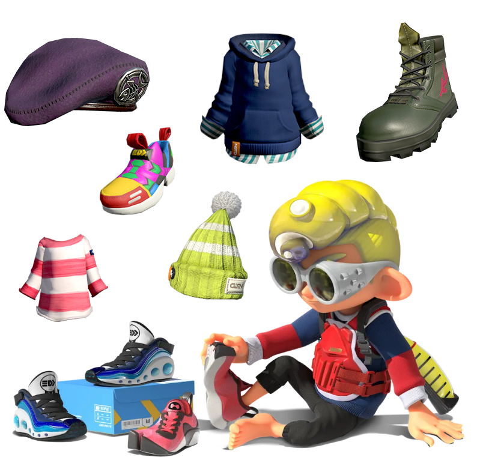

GAMEPLAY
SALMON RUN
STORY MODE
GEAR
Stay Fresh!
Inklings and Octolings are nothing if not fashionable. They spend the cash earned from their battles to purchase and level up “Gear”. Gear ranges from headwear, clothing, and shoes. Each piece comes equipped with stat boosting abilities. Some help players run or swim faster, others help conserve ink usage or respawn times. Your best bet is to mix and match gear to find what works best for you on the battlefield.
